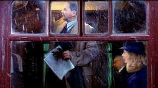

| Charlotte Gray/ B+,A- |
| Warner/2001/121/ANA 1.85 |
Gillian Armstrong's lusciously shot film Charlotte
Gray is the story of one woman's journey into France during World War
II as an undercover agent working with the French Resistance. The romantic
elements take center stage, though everything is framed as a war drama. It
is always beautiful to behold. It's good drama, well paced and directed
with enthusiasm.
Jeremy Brock delivers a highly intelligent
script for Charlotte Gray. Perhaps there's a touch of heavy-handed
grandstanding here and there and maybe some elements suggest a girls'
adventure novel, but overall it's powerfully developed with interesting
characters. The transitions in the film are nicely done, from Charlotte's
introduction, to the introduction of her romance, to her recruitment, to
her war role, to the drop to France. It works in what seems to be a
natural order for this film.
 |
|
Like an Impressionist portrait. ©Warner |
Director Armstrong is sensitive to the
material and tone. The romantic elements color everything, and that's as
it should be. Her sense from scene to scene has cinematic integrity. The
opening love scene is beautifully evolved. It's charming and touching. And
that first scene in the French cafe is very involving. I was not quite
sure about what was going on there, but the tension sets up a lot about
character and strength.
Dion Beebe delivers the goods in spades with elegant
sweeping cinematography. The camera adds an extra measure of luster to the
production. The world around Charlotte takes on a hyper-reality.
Production design is stunning, from the London location, to the French
villages. Period details look perfect. First class travel all the way!
Cate looks great as Charlotte. Gillian Armstrong
has shot her so beautifully and Cate fits in the clothing and the times so
well. Armstrong loves making Blanchett look beautiful. Good match up
between Cate Blanchett and Billy Crudup. Crudup is very convincing as
young Julien Levade. They seem to have very good screen chemistry. Michael
Gambon is outstanding as Levade senior. He's hides under an abrasive
shell, but there's a strength and a good man under the armor.
Warner has delivered a stunning DVD in Charlotte
Gray. The color is so sumptuous it takes your breath away. The
lavender opening again a green border is pure picture postcard with some
of the most enticing purple I have ever seen on video. Detail is
outstanding. Lovely skin tones. We're in reference territory with
consistently sharp images with no edginess. Blacks are very deep. Color
resolution is outstanding with a full range. It's a very glossy look. The
train traveling over the bridge against the lush greenery is beautiful.
Shadow detail is excellent. Get a gander at those fabulous fabric
textures. You can run your eye's hand across the fabrics and feel the
subtleties. Color range is truly brilliant. Just a touch of slight
edginess intrudes on certain scenes. Fine, detailed sound with excellent
specificity. Dialogue is easy to understand. The music has a lovely open
feel. It surrounds the image and wraps itself around it. Outstanding bass
extension on the explosions.
Special edition includes audio commentary from
director Gillian Armstrong. A consistently intelligent presence, Armstrong
shares her enthusiasm for the project and the players. A four-minute short
revisits the French settings. Another segment just shy of four minutes
looks at the experience of the characters. A theatrical trailer completes
the package.

The Movie Poster Archive includes extensive poster images from the films of stars like Susan Hayward, Kirk Douglas, Katharine Hepburn and many more. Our featured star is Susan Hayward

Selections from the Feature
Archive include articles on Akira Kurosawa, Blonde Bimbos, Frank Darabont, Steven Culp, John Herzfeld or Vietnam: The Hollywood Pariah, and many
more....
The Bitch Brigade

A line-up of lean-lipped actresses who marched through
Hollywood in a high heeled goose step armed with razor sharp dialogue.
Click on the image to read all about them.

 Have you visited Home Theater Talk
lately? One of the friendliest places on the Net for Home Theater and DVD
discussion, you can get help for installation problems or simply share
your opinions with other Vidiots.
Have you visited Home Theater Talk
lately? One of the friendliest places on the Net for Home Theater and DVD
discussion, you can get help for installation problems or simply share
your opinions with other Vidiots.

ISF presenter and industry consultant Jim Burns provides info and HDTV
and other areas on his site.

Rent the hottest movies at DVDO with no monthly charges, late fees or due
dates! Upgrade your free membership anytime to our exclusive Double Feature Club
MRQE
Find reams of movie and DVD reviews
at the Movie Review Query Engine, a index of reviews appearing on the
Internet.

Maximizing home theater sound and image featuring quality
interconnects and speaker wire.